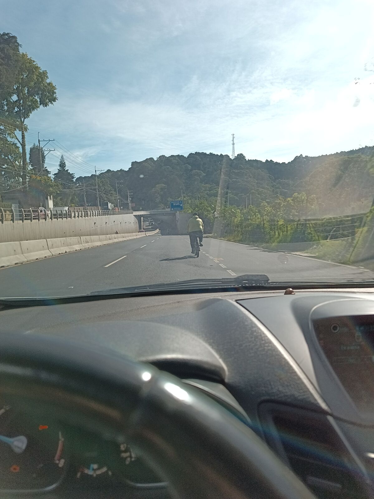
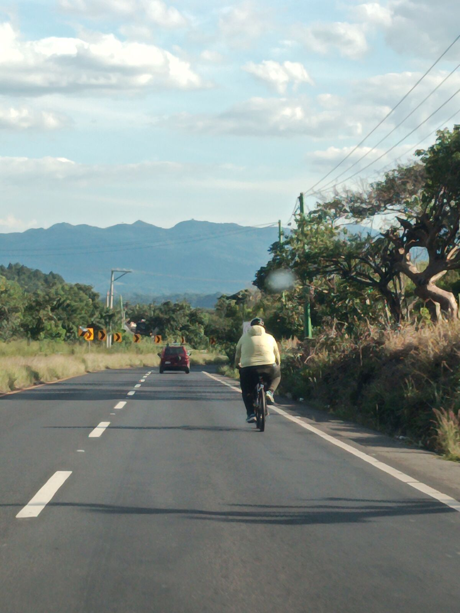

Sin excusas
Esa misma mañana casi no salimos. Uno de los planes del viaje es presentar en Costa Rica el libro de José, «Adicto a la pobreza». Los libros ya deberían estar en Guatemala, pero siguen atorados en aduanas: a hoy lunes todavía no nos avisan que podemos ir a traerlos. Pensamos quedarnos un día más en la ciudad y salir el lunes con los libros. Lo dejamos en el tintero un rato, hasta que los dos dijimos: nel. Esto se tiene que hacer con o sin libros, y si al empezar ya estábamos agarrando cualquier excusa para no hacerlo, no era buen presagio. Así que dejamos las excusas atrás.
Salimos de la Ciudad de Guatemala el domingo 25 de octubre, más o menos al mediodía. José se aventuró con los primeros kilómetros en bici y yo iba detrás en el carro. Como dije en el primer video: nos vamos en bici a Costa Rica, pero uno de los dos no sabe andar en bici. Adivinen quién va en el carro, jaja. Todavía no sabemos qué día vamos a llegar.

Al principio improvisamos un montón. Empezamos a transmitir con OneStream, pero a mí la cámara de José se me ponía negra, jaja, así que terminamos yendo como en una llamada, pero transmitiendo. A los pocos kilómetros paramos para revisar todo de nuevo. Un día antes compré unos micrófonos que, más que ayudarnos, nos han dado dolores de cabeza. Pero eso es lo interesante: esto es un aprendizaje continuo. Volvimos a parar en una gasolinera Shell en las afueras, sobre la carretera a El Salvador, e hicimos lives en Facebook.
Después retomamos la travesía, poco a poco. Desde el carro vi cómo casi atropellan a José varias veces: íbamos en carretera abierta y, aunque las señales dicen 80 km/h máximo, los carros pasaban fácilmente a más de 100. En Guatemala la gente no respeta esas señales. El tramo fue casi pura bajada, con un par de subidas cortas en los pasos a desnivel, pero todo bien.

Cerca del km 45 decidimos parar. Fueron unos 25 km bien trabajados. Para guardar la bici hay que ponerla al revés, con el asiento y el manubrio en el suelo, y en eso se escuchó que algo se quebraba: era el soporte del teléfono con el que José hacía los lives. Se partió en dos, así que ya no pudimos transmitir más.
Estábamos a unos kilómetros de El Cerinal, donde vive mi abuelo, así que nos fuimos a pasar la noche con él: comiendo, riendo y aprendiendo bastante. Aprovechamos para pulir detallitos, como entender bien cómo funcionan los micrófonos y poner a cargar todo lo que había que cargar: teléfonos, micrófonos, trípode.
Mientras iba en el carro detrás de José pensaba que esto es realmente en serio. Podríamos regresarnos y decir «por lo menos lo intentamos», pero a pesar del dolor que viene y de que no tenemos una ruta tan definida, lo vamos haciendo: no perfecto, pero poco a poco. Es increíble ver la determinación de José. Y me quedo con otra cosa: la ayuda importa. Tener a alguien con quien pivotear, en este caso yo, sirve para encontrar juntos mejores soluciones.